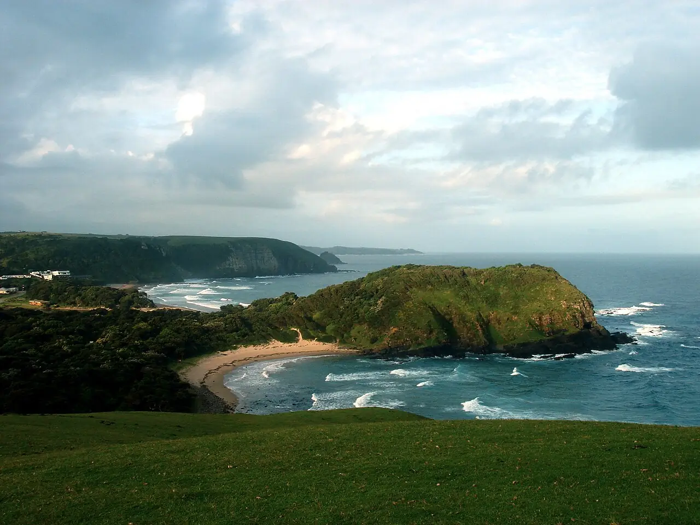

Coffee Bay
Wild Coast, Cap-Oriental, Afrique du Sud · surf, baignade

Village de la Wild Coast niché dans une baie entre collines verdoyantes, avec une plage de sable à l’embouchure de la rivière. Les vagues de plage conviennent aux surfeurs autonomes, et le célèbre Hole in the Wall se trouve à quelques kilomètres le long de la côte.
- Lieu
- Wild Coast, Cap-Oriental, Afrique du Sud
- Niveau
- Intermédiaire
- Activités
- surf, baignade
- Type d'eau
- Mer / océan
- Coordonnées
- -31.99, 29.15 (position approximative du secteur)
Dangers à connaître
- Courants d’arrachement, surtout près de l’embouchure.
- Présence de requins signalée sur la Wild Coast : évite l’aube, le crépuscule et les eaux troubles.
Le conseil d'Ocean Buddy
Renseigne-toi auprès des surfeurs locaux sur les courants du jour et évite de te baigner près de l’embouchure après de fortes pluies.
Ouvrir dans Ocean Buddy Télécharger sur l'App Store
Source : Fiche Ocean Buddy · septembre 2026 · à vérifier localement.